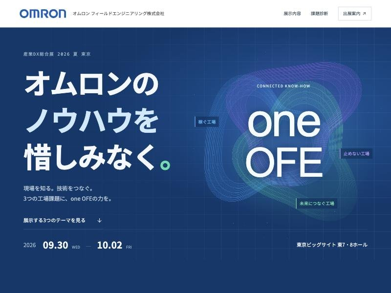
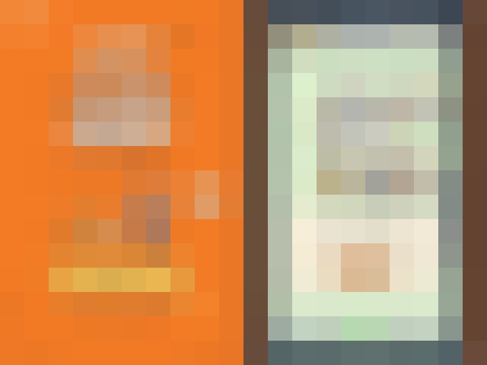
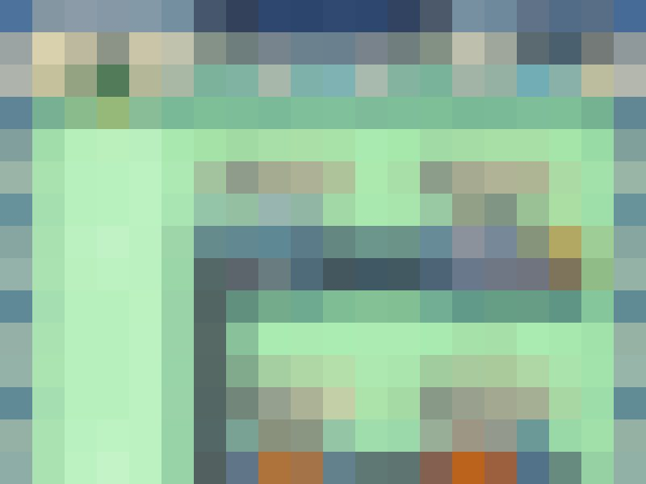
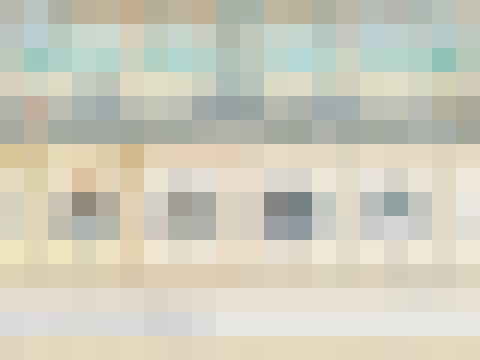
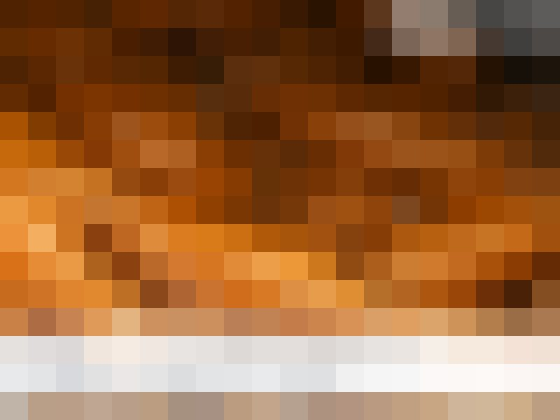
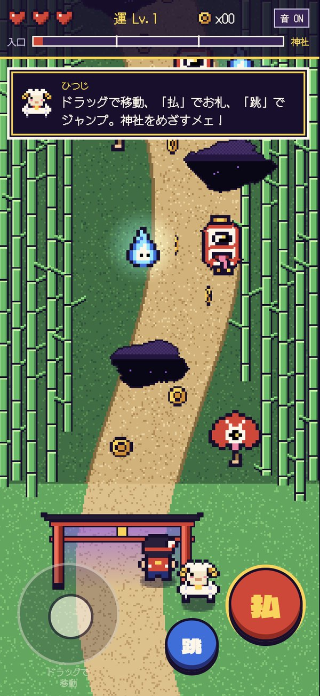
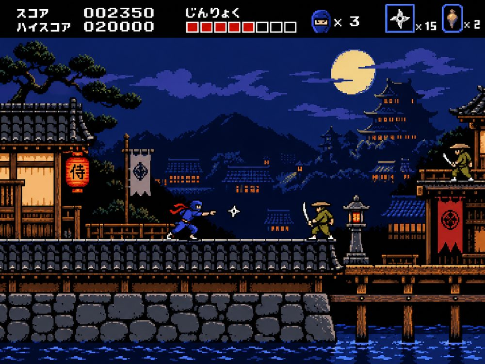

AIがなかった頃から、販促の企画と制作の現場にいました。何が通って、何が差し戻されるかを知っているから、AIの出力を「そのままクライアントに出せる」ところまで仕上げます。使ったAIも、人が直したところも、ぜんぶ見せます。
販促の成果は、つくる前の「何をやるか」で決まります。大手企業の販促企画に携わってきた経験をもとに、目的とターゲットから企画を組み立て、AIで一気に形にします。
どのAIを、どの工程で、どう組み合わせるか。そこに編集とデザインの技術を重ねて、はじめて「使える」クリエイティブになります。
目的、ターゲット、予算感をうかがい、施策の組み立てからご提案します。「何をつくるか」が決まっていない段階でも大丈夫です。
構成案、ビジュアル、素材づくりをAIで一気に進めます。初回アップは1週間以内、納品まで1か月が標準です。急ぎの案件や、提案前のたたき台づくりにも対応します。
AIの出力をそのまま納品しません。レイアウト、色、コピー、カット編集まで、人の手で整えます。
AIでのクリエイティブは、まだ始まったばかり。だから、つくり方を隠さず共有し、お客さまと一緒に伸ばしていきます。
どのAIを、どの工程で、どう使ったかをオープンに。ブラックボックスにしないから、権利や品質の面でも安心して任せられます。
使ったAIと工程、プロンプトの要点を1枚に。社内での再利用や、次の企画に活かせます。
うまくいったこと、いかなかったことを一緒に振り返り、次の制作に活かします。

展示する3つのテーマ（稼ぐ工場・止めない工場・未来につなぐ工場）から、来場者が自分の課題に合う展示を見つけられる構成に。ブースでの相談につなげる課題診断（3問・各6択）も組み込みました。
新製品の特長が短い尺でひと目で伝わるよう、AIで生成した映像素材と編集技術を組み合わせて一本のプロモーションムービーに仕上げました。




WEBサイト、ゲーム、展示会やイベントのコンテンツ、動画まで。多くは守秘義務があるため、ここでは画面にモザイクをかけています。
AI導入の伴走パートナーとしても、企業のみなさまをご支援しています。
ご連絡いただければ、ご相談の内容に合わせて直接サンプルをお見せします。
以下は、制作の幅をお伝えするための自主制作サンプルです。

竹林の参道を進んで神社をめざすブラウザゲームです。ドラッグで移動、「払」でお札、「跳」でジャンプ。神社に着いたら、鈴を鳴らして二礼二拍手一礼でお参りします。

月夜の江戸を駆けぬける、横スクロールの忍者アクションです。手裏剣・刀・焙烙玉を使い分けて、悪代官にさらわれた姫を救い出します。PCはキーボード、スマホは横画面で遊べます。
ブースのデザインを3Dで先に見せて、そのブースで流す映像、来場者が遊ぶミニゲーム、出展LPまで。展示会の「見せる」を、ひとつの窓口でつくります。
島小間・角小間・並列小間を、寸法入りの3Dで比べられます。色や雰囲気もその場で変えて、社内の合意を早めます。
製品紹介のループ映像やサイネージ用の短尺を、AIで短納期に。会期直前の差し替えや、小さな追加にも対応します。
モニターやタブレットで、その場で遊べるブラウザゲーム。足を止めてもらい、名刺交換やアンケートにつなげます。
会期前の告知、来場予約、会期後のお礼まで。実績：オムロン フィールドエンジニアリング株式会社様 産業DX総合展2026 出展LP
キャンペーンの目的とターゲットから企画を組み立て、LP・動画・ミニゲームなど必要なものをまとめて制作します。窓口がひとつなので、進行もシンプルです。
使いどころ 新商品のローンチ、季節・周年キャンペーン、採用強化、展示会
構成・コピーからビジュアル、コーディングまで、AIを活用してLPをつくります。
使いどころ 商品紹介、キャンペーン、採用、イベント告知
AIで生成した映像・画像・音声を、編集技術で一本の動画にまとめます。
使いどころ 商品紹介、SNS告知、展示会、採用
インストール不要、リンクを開くだけで遊べるブラウザゲームを、AIを活用して開発します。商品やブランドの世界観に合わせてつくります。
使いどころ キャンペーン、店頭やイベントでの集客、SNSでの話題づくり
業務ツールやWebアプリを、AIを活用してすばやく形にします。
使いどころ 予約・受付、社内の業務ツール、試作品での検証
クロス分析を使った高機能診断サイト。回答を掛け合わせて、一人ひとりに合った結果を出します。
使いどころ 商品・サービス選びの提案、見込み客の獲得、採用
リアルイベントの企画から演出、設計まで。AI×リアルの新体験をつくります。
使いどころ 展示会、店舗イベント、発表会・周年行事
バナー、SNS素材、キャラクター制作、AI活用の相談など、上記以外もお気軽にどうぞ。
提案書のビジュアル化から、LP・動画・ミニゲームの制作まで。急ぎの案件や、提案にAIの要素を加えたいときにご相談ください。企画の意図をくみ取ったうえで、制作だけを切り出してお任せいただくこともできます。
目的、ターゲット、予算感、スケジュールをうかがい、企画の方向性をすり合わせます。
企画案と、構成・ビジュアルのたたき台をAIで複数案つくり、1週間以内に初回アップします。
決まった方向で作り込み、人の手で細部を仕上げます。
校正を反映して納品します。キャンペーンでは、公開後の振り返りと改善のご提案まで行います。
目的と方向性をすり合わせ、企画とたたき台をつくります。
1週間以内に初回アップいただいたご意見をもとに、デザインと内容を作り込みます。
細部を人の手で整え、公開・納品の準備をします。
最終チェックのうえ納品します。ご依頼から1か月が目安です。
1か月で納品お急ぎの場合は短縮もご相談ください。規模の大きい案件は、スケジュールをご相談のうえ決定します。
企画、デザイン、動画、ゲーム、アプリ。それぞれの得意をもったメンバーで、案件に合わせてチームを組みます。
標準は、初回アップまで1週間以内、校正3回を経て1か月で納品です。AIでたたき台を早くつくれる分、確認と調整に時間を使えます。お急ぎの場合は短縮もご相談ください。
基本は校正3回までです。それ以上の修正も、別途費用でご対応できます。お気軽にご相談ください。
はい、ご利用いただけます。著作権を侵害しないよう、AIでの生成方法と使用する素材を選び、これまでの生成ノウハウを活かして制作しています。
はい、可能です。LPデザインの料金にはコーディングまで含みます。公開作業とドメインの取得は別途で承ります。
はい、制作パートナーとしてお受けしています。御社名義での納品や、秘密保持契約（NDA）の締結にも対応します。料金は案件ごとにお見積りします。
はい。私たちのモットーは「隠さない、共有する、伸ばす」です。納品時に、使ったAIと工程、プロンプトの要点をまとめた制作プロセスシートをお渡しします。
はい。キャンペーン一式は、成果報酬型でのご相談もお受けしています。コンペへの参加も、提案づくりから一緒に取り組みます（業界によっては受注率80%以上の実績があります）。
10万円未満のご依頼は着手前のお支払い、10万円以上は着手時に50%、納品時に50%をお願いしています。条件はご相談に応じます。
ご相談・お見積りは無料です。「何をつくるか」が決まっていない段階でも歓迎します。
送信しました。
ご相談ありがとうございます。内容を確認して、メールでご連絡します。
送信できませんでした。お手数ですが、下の文面をコピーして、info@aimania.tech へメールでお送りください。
メールアプリが開かない場合は、コピーした文面をお使いください。